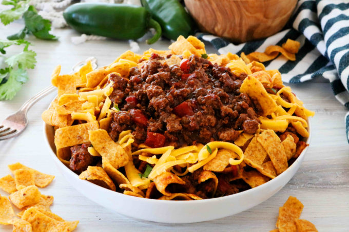

Frito Pie Recipe

About the Frito Pie
This creative dish has very few ingredients, yet tastes amazing! By mixing chili, corn chips, cheese and green onions
you can have a filling meal making you want more!
First introduced to me by a friend, I thought initially it sounded too good to be true, but after taking my first bite I was hooked! That's why i'm here
to let you know exactly how to make this, in the most simple way possible.
Ingredients
- 1 Can of chili with no beans
- 1 Cup of shredded cheese
- 1 big bag of corn chips
- 1/2 Cup of diced green onions
- (optional for added spiciness) 1 chopped jalapeno pepper
Steps
- Remove chili from can using a can opener, and place the contents into a microwave-safe dish or metal pan.
- Place shredded cheese on top of chili, this ensures that the cheese will melt onto the chili.
- Add the green onions (and jalepenos if you decided to add them) on top of the chili and cheese, spreading it evenly.
- Heat this dish in either a microwave for about 45 seconds, or an oven at 350 degrees Fahrenheit for 5-7 minutes if you decided to use a pan.
- Place corn chips into a large bowl or two smaller bowls depending on if you decide to share with a friend!
- Take the heated chili mixed with the ingredients and place it on top of the corn chips, be careful it will be hot.
- Allow to cool until it is ready to eat, and enjoy!